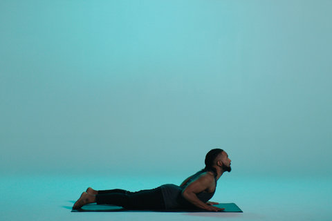

3 Yoga Poses for Beginners
Downward-Facing Dog 下犬式
Downward-facing dog strengthens the arms, shoulders and back while stretching the hamstrings, calves and arches of your feet. It can also help relieve back pain.
下犬式可以增强手臂、肩膀和背部力量，同时拉伸腿筋、小腿和脚弓，还可以缓解背部疼痛。

Do it: To help relieve back pain.
益处：缓解背部疼痛。
Skip it: This pose is not recommended if you have carpal tunnel syndrome or other wrist problems, have high blood pressure or are in the late stages of pregnancy.
不适用人群：有腕管综合症或其他手腕问题的人群、高血压人群或孕晚期孕妇。
Modify: You can do the pose with your elbows on the ground, which takes the weight off your wrists. You can also use blocks under your hands, which may feel more comfortable.
变体：在做这个体式时，可以将肘部放在地上，减轻手腕承受的重量。你也可以将瑜伽砖垫在手下，可能感觉会更舒适。
Be mindful: Focus on distributing the weight evenly through your palms and lifting your hips up and back, away from your shoulders.
注意：注重通过手掌均匀地分配重量，将臀部向上抬起，向后伸展，远离肩膀。
Cobra Pose 眼镜蛇式
This back-bending pose can help strengthen the back muscles, increase spinal flexibility and stretches the chest, shoulders and abdomen.
这个背部后仰的体式可以帮助加强背部肌肉，增加脊柱的灵活性，并拉伸胸部、肩部和腹部。

Do it: This pose is great for strengthening the back.
益处：加强背部力量。
Skip it: If you have arthritis in your spine or neck, a low-back injury or carpal tunnel syndrome.
不适用人群：脊柱或颈部有关节炎的人群，腰部受伤人群，以及有腕管综合症的人群。
Modify: Just lift up a few inches, and don’t try to straighten your arms.
变体：只是将身体抬起几厘米，手臂不要用力伸直。
Be mindful: Try to keep your navel drawing up away from the floor as you hold this pose.
注意：保持这个姿势时，尽量使肚脐远离地面。
Child's Pose 婴儿式
You can use child’s pose to rest and refocus before continuing to your next pose. It gently stretches your lower back, hips, thighs, knees and ankles and relaxes your spine, shoulders and neck.
婴儿式是一个放松动作，它可以帮助你在继续下一个体式前，重新集中注意力。它轻柔地拉伸你的下背部、臀部、大腿、膝盖和脚踝，放松脊柱、肩膀和脖子。

Do it: When you want to get a nice gentle stretch through your neck spine and hips.
益处：轻柔地拉伸颈部、脊柱和臀部。
Skip it: If you have knee injuries or ankle problems. Avoid also if you have high blood pressure or are pregnant.
不适用人群：有膝关节损伤或脚踝问题的人群、高血压人群，以及孕妇。
Modify: You can rest your head on a cushion or block. You can place a rolled towel under your ankles if they are uncomfortable.
变体：可以把头放在软垫或瑜伽砖上。如果脚踝不舒服，可以在脚踝下放一条卷好的毛巾。
Be mindful: Focus on relaxing the muscles of the spine and lower back as you breathe.
注意：呼吸时，集中精力放松脊柱和腰部的肌肉。